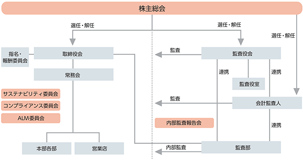
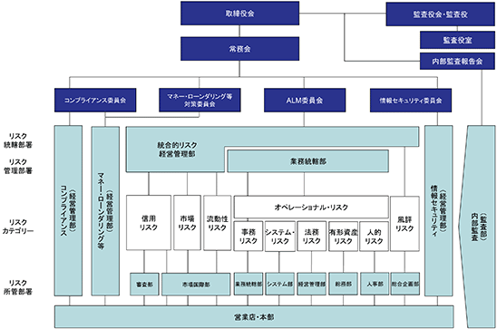

該当事項はありません。
該当事項はありません。
③ 【その他の新株予約権等の状況】
該当事項はありません。
該当事項はありません。
（注） 発行済株式総数の減少は、株式併合（５株を１株に併合）によるものであります。
2024年３月31日現在
(注) 自己株式6,159,570株は「個人その他」に61,595単元、「単元未満株式の状況」に70株含まれております。
2024年３月31日現在
（注）１ 当行は自己株式6,159千株（発行済株式総数に対する所有株式数の割合は11.60％）を所有しておりますが、上記大株主の状況には記載しておりません。
２ 2023年11月６日付で公衆の縦覧に供されている大量保有報告書の変更報告書において、ウエリントン・マネージメント・カンパニー・エルエルピー（Wellington Management Company LLP）及びその共同保有者であるウエリントン・マネージメント・インターナショナル・リミテッド（Wellington Management International Ltd）が2023年10月31日現在で以下の株式を所有している旨が記載されているものの、当行として2024年３月31日時点における実質所有株式数の確認ができません。
なお、大量保有報告書の変更報告書の内容は以下のとおりであります。
３ 2023年１月30日付で公衆の縦覧に供されている大量保有報告書の変更報告書において、シルチェスター・インターナショナル・インベスターズ・エルエルピー（Silchester International Investors LLP）が2023年１月27日現在で以下の株式を所有している旨が記載されているものの、当行として2024年３月31日時点における実質所有株式数の確認ができません。
なお、大量保有報告書の変更報告書の内容は以下のとおりであります。
2024年３月31日現在
(注) 「単元未満株式」欄の普通株式には、当行所有の自己株式70株が含まれております。
2024年３月31日現在
該当事項はありません。
会社法第155条第3号による取得
会社法第155条第7号による取得
（注）１ 単元未満株式の買取りによる増加であります。
２ 当期間における取得自己株式には、2024年６月１日から有価証券報告書提出日までの単元未満株式の買取りによる株式数は含めておりません。
（注） 当期間における保有自己株式数には、2024年６月１日から有価証券報告書提出日までの単元未満株式の買取り、買増請求による売り渡し及び市場買付けによる自己株式数は含めておりません。
当行は、「『三方よし』で地域を幸せにする」のパーパスのもと、健全性、成長投資、株主還元をバランスよく運営する「三方よし」の資本政策をベースに、出来る限りの株主還元を行うことを基本方針としております。
配当については、株主総会の決議を要しますが、当事業年度の期末配当金は1株当たり40円として2024年６月26日開催の定時株主総会にお諮りする予定であります。
当行は会社法第454条第５項の規定に基づき、取締役会の決議によって中間配当をすることができる旨を定款に定めており、中間配当として１株当たり50円（普通配当40円、創立90周年記念配当10円）をお支払いいたしました。
第８次中期経営計画期間（５年間：2024年４月～2029年３月まで）の株主還元につきましては、配当と自己株式取得合計の株主還元率40％を目安に取り組んでまいります。
(注) 基準日が当事業年度に属する剰余金の配当は、以下のとおりであります。
当行は財務及び事業の方針の決定を支配する者の在り方に関する基本方針を定めておりませんので、その内容等（会社法施行規則第118条第３号に掲げる事項）については記載しておりません。
① コーポレート・ガバナンスに関する基本的な考え方
当行は、滋賀県に本拠を置く地方銀行として、伝統ある近江商人の「三方よし（売り手よし、買い手よし、世間よし）」の精神を継承した行是「自分にきびしく 人には親切 社会につくす」を活動の原点とし、経営理念に掲げる「地域社会」「役職員」「地球環境」との共存共栄に努め、当行の持続的な成長と中長期的な企業価値向上を図る観点から、次の基本的な考え方に基づきコーポレート・ガバナンスの充実及び不断の見直しを行っております。
（コーポレート・ガバナンスに関する基本的な考え方）
・株主の権利を尊重し、平等性を確保する。
・ステークホルダーと適切に協働する。
・非財務情報を含めた情報の適切な開示と、意思決定の透明性、公正性を確保する。
・経営陣幹部による適切なリスクテイクを可能とするための環境整備を行う。
・持続的な成長と中長期的な企業価値向上に資するため、株主との対話を重視する。
② 企業統治の体制の概要及び当該体制を採用する理由
（企業統治体制の概要）
当行は監査役会制度を採用し、社外取締役を含む取締役会が経営を監督する機能を担い、社外監査役を含む監査役会が取締役会を牽制する体制としております。
業務運営上は、業務執行の意思決定機関である常務会を中心に、コンプライアンス委員会やＡＬＭ委員会を設置し、さらに監査役がそれらの運営状況の監視を行っております。
（当該体制を採用する理由）
経営を監督する取締役会を監査役会が牽制する体制とすることで適正なコーポレート・ガバナンスを確保できるものと判断しております。
③ 各機関の内容及び内部統制システムの整備の状況等
(Ａ) 取締役会
取締役会は９名(有価証券報告書提出日現在、うち社外取締役３名)の取締役で構成され、監査役出席のもと、原則毎月１回開催し、当行の重要な業務執行を決定し、取締役の職務の執行を監督しております。
なお、以下の取締役会構成員のほか、監査役は取締役会に出席することを要する旨を定め、監督機能の強化を図っております。
(取締役会構成員の氏名等）
議 長：取締役会長 高橋祥二郎
構成員：取締役頭取 久保田真也 ・ 専務取締役 西藤崇浩 ・ 常務取締役 堀内勝美
常務取締役 戸田秀和 ・ 常務取締役 遠藤良則 ・ 取締役 竹内美奈子（社外取締役）
取締役 服部力也（社外取締役） ・ 取締役 鎌田沢一郎（社外取締役）
2024年３月期の取締役会の活動状況は以下のとおりであります。
なお、2022年12月より討議事項を新設し、経営戦略や経営課題など重要テーマに関して、本質的かつ建設的な意見交換を行っております。
(Ｂ) 監査役会
監査役会は、監査役４名(有価証券報告書提出日現在、うち社外監査役２名)で構成され、監査役会を原則毎月１回開催し、監査の方針、監査計画、監査の方法、監査業務の分担の策定など、監査に関する重要事項の決議、協議、報告等を行っております。
（監査役会構成員の氏名等）
議 長：監査役（常勤） 大野恭永
構成員：監査役（常勤） 杉江秀樹
監査役（非常勤） 松井保仁（社外監査役）・ 監査役（非常勤） 大西一清（社外監査役）
2024年３月期の監査役会の活動状況は以下のとおりであります。
なお、監査役監査の状況については「（３）監査の状況 ①監査役監査の状況」に記載しております。
(Ｃ) 指名・報酬委員会
指名・報酬委員会は、取締役会長・取締役頭取・社外取締役により構成（過半数は社外取締役）され、指名・報酬に関する事項について、取締役会の諮問に応じて審議し、取締役会に対して助言・提言を行っております。
(指名・報酬委員会構成員の氏名等）
議 長：取締役頭取 久保田真也
構成員：取締役会長 高橋祥二郎 ・ 取締役 竹内美奈子（社外取締役）・ 取締役 服部力也（社外取締役）
取締役 鎌田沢一郎（社外取締役）
2024年３月期の指名・報酬委員会の活動状況は以下のとおりであります。
(Ｄ) 常務会
常務会は、取締役会長・取締役頭取・取締役副頭取（現在空席）・専務取締役・常務取締役から構成され、監査役出席のもと投資計画、新商品の開発、営業体制の強化、リスク状況の把握など、経営全般について迅速な意思決定を行うために、必要に応じて開催しております。
なお、重要な業務の執行については取締役会に上程しております。
(Ｅ) 内部監査体制
内部監査を実施する監査部は25名(2024年３月31日現在。出向者を除く)で構成され、監査対象部店の内部管理態勢の適切性・有効性を検証・評価しております。
なお、内部監査の状況については、「（３）監査の状況 ②内部監査の状況」に記載しております。
(Ｆ) サステナビリティ委員会
サステナビリティ委員会は、取締役頭取を委員長とし、しがぎんグループのＥＳＧ（環境、社会、ガバナンス）優先課題、社会的課題解決を中長期的な観点から議論し、地域社会、お取引先、当行グループのサステナビリティ（持続可能性）の向上を目指すための企画の検討を行っております。
(Ｇ) コンプライアンス委員会
コンプライアンス委員会は、専務取締役を委員長とし、参与として監査役を加え、誠実・公正な企業活動の遂行に資することを目的として、社会規範、法令及び当行内規の遵守に向け慎重な審議を行うとともに、諸問題に内在するリスクの縮減に向け、ルール・ベースにとらわれず、より高い視座をもって総合的な検討を行っております。
(Ｈ) ＡＬＭ委員会
ＡＬＭ委員会は、取締役頭取を委員長とし、ＡＬＭ(資産と負債の総合管理)の対応とともに、リスク管理の充実によって安定した収益の向上に寄与することを目的としております。
リスク・アペタイト・フレームワークの考え方に基づき、健全性と効率性の両面から資本・資金を最大限活用すべく運営しております。
(Ｉ) 会計監査人
当行と監査契約を締結している有限責任監査法人トーマツが会計監査人として監査を実施しております。
（当行の会計監査業務を執行した公認会計士の氏名及び所属する監査法人名）
なお、会計監査の状況については、「（３）監査の状況 ③会計監査の状況」に記載しております。
(コーポレート・ガバナンス体制の概要)

（内部統制システムの整備の状況）
（ａ）基本方針
当行は、 滋賀県に本拠を置く地方銀行として、伝統ある近江商人の「三方よし（売り手よし、買い手よし、世間よし）」の精神を継承した行是「自分にきびしく 人には親切 社会につくす」を活動の原点とし、経営理念に掲げる「地域社会」「役職員」「地球環境」との共存共栄に努めております。
この考え方に基づき、当行グループは、業務の適正を確保するための体制（内部統制システム）を次のとおり構築しております。また、変化する経営環境に適切に対応するため、適宜必要に応じて体制の見直しを行っております。
（ｂ）業務の適正を確保するための体制
ア.当行及び子会社の取締役の職務の執行が法令及び定款に適合することを確保するための体制並びに当行及び子会社の使用人の職務の執行が法令及び定款に適合することを確保するための体制
・当行グループは、コンプライアンス体制の整備、並びに規程類の制定、使用人の教育訓練を行い、グループ全体としてのコンプライアンス体制を構築しております。
・当行の経営管理部はコンプライアンス統轄部署として、グループ会社のコンプライアンス体制の整備、規程類の制定、使用人の教育や訓練に、必要に応じ助言や指導を行っております。
・当行の総合企画部及び所管部はグループ会社における日常のコンプライアンス実施状況を把握し、必要に応じ助言や指導を行っております。
・当行の監査役及び監査部は、当行グループの健全かつ適正な業務運営に資することを目的に監査を実施しております。
・当行の取締役及び監査役は、必要に応じ当行の監査部との連携を確保しております。
・また、当行グループでは全ての役職員が利用できる「内部通報制度」を整備しております。
・当行グループは市民社会の秩序や安全に脅威を与える反社会的勢力等との関係を遮断し、断固として排除するための体制を整備しております。
イ.当行の取締役の職務の執行に係る情報の保存及び管理に関する体制
・当行は取締役会、常務会、その他重要な諸会議の議事録やその他の経営上の重要な文書・情報の保存及び管理方法を「事務取扱要領」で定め、適切に管理しております。
ウ.当行及び子会社の損失の危険の管理に関する規程その他の体制
・当行は基本規程である「リスク管理規程」を定め、これに基づいて主要なリスク毎に具体的な管理体制を構築するとともに、リスク管理の統轄部署を経営管理部と定め、統合的リスク管理を行っております。リスク管理に関する重要事項については取締役会に付議・報告する体制としております。
・グループ会社のリスク管理に関しては、当行の総合企画部がリスク管理規程に基づき、各リスク所管部と連携し、その保有するリスクに応じて適切に管理を行っております。
・当行の総合企画部はグループ会社からの報告、もしくは銀行のモニタリング等の結果に基づき、リスクの状況を適切に把握し、それが銀行の経営に重要な影響を与えると判断した場合は常務会及び必要に応じて取締役会に報告を行う体制を整備しております。
エ.当行及び子会社の取締役の職務の執行が効率的に行われることを確保するための体制
・当行グループでは、取締役の職務執行を効率的に行うため、「取締役会規程」で取締役会での決議事項を明確に定めております。また、当行では取締役会の決定する事項の細目及び日常的な業務の決定を役付取締役で構成される常務会に委任しております。
・役付取締役については、担当業務を定めることで職務分担を行い、効率化を図っております。
・中期経営計画において連結での経営指標を掲げ、グループとしての効率化に努めております。
オ.子会社の取締役の職務の執行に係る事項の当行への報告体制その他の当行及び子会社から成る企業集団における業務の適正を確保するための体制
・当行は当行グループにおける業務の適正を確保するため、当行グループを一体と考え、グループ全体が同等の水準で法令遵守やリスク管理等の内部管理体制を構築しております。
・当行グループは「関連会社管理・運営規程」を定め、コンプライアンス、顧客保護、リスク管理等について、グループ横断的に統一された管理体制の構築を目指しております。
・グループ会社の代表取締役は全部課店長会やサステナビリティ委員会等の重要な会議に出席しております。
・当行の監査役及び監査部はグループ会社に対して定期的に業務監査を行っております。
・グループ会社に対し、四半期ごとの財務・業績の概況並びに決算状況の他、当行が求めた場合には一定の事項を報告することを義務付けております。
カ.当行の監査役がその職務を補助すべき使用人を置くことを求めた場合における当該使用人に関する事項、当該使用人の取締役からの独立性に関する事項及び当該使用人に対する監査役の指示の実効性の確保に関する事項
・当行は監査役の職務を補助する業務執行取締役から独立した使用人を常設し、監査役の職務を遂行するために十分な体制を構築しております。
・監査役の職務を補助すべき使用人の処遇については、監査役会と協議して行うものとしております。
・監査役を補助する使用人は、監査役の指示に従い業務を遂行する方針を定めております。
キ.当行の取締役及び使用人並びに子会社の取締役、監査役及び使用人(これらから報告を受けた者を含む)が当行監査役に報告をするための体制その他の監査役への報告に関する体制、及びその他監査役の監査が実効的に行われることを確保するための体制、当該報告をした者が報告をしたことを理由に不利な取扱いを受けないことを確保するための体制
・当行の監査役は当行グループの経営状態を十分に把握し、監査役としての業務執行の実効性を確保するため、各企業の主要な会議にも出席しております。
・また、当行監査役は当行代表取締役と定期的な意見交換会を開催しております。
・当行の監査部は経営に関する課題、重大なコンプライアンス上の問題や不正不祥事の事実等を、当行の監査役に報告しております。
・グループ会社で作成する稟議書やその他の重要な報告は当行監査役にも回付するなど、監査役に報告するための体制を整備しております。
・当行グループでは全ての役職員が利用できる内部通報制度を整備しており、通報内容は当行監査役に報告されます。なお、通報したことを理由に不利益な扱いを行うことは禁止されております。
ク.当行監査役の職務の執行について生ずる費用の前払又は償還の手続その他の当該職務の執行について生ずる費用又は債務の処理に係る方針に関する事項
・監査役がその職務の執行について会社法第388条に基づき費用の前払いの請求等をしたときは、その職務に必要でないと認める場合を除き、速やかに支払う方針を定めております。
(リスク管理体制)
当行では、リスク管理を銀行の本質的な機能のひとつと位置付け、各種リスクを的確に把握・分析・評価し、適切に管理することが経営の健全性を維持し、収益性を向上するための最重要課題であると認識しております。
そのため、取締役会において「リスク管理規程」を定め、管理すべきリスクの種類を特定し、各リスク所管部の役割と責任を明確化するとともに、リスクの管理方法について規定しております。また、コンプライアンスやマネー・ローンダリング等のリスクについても、重要性が増していることから、別途委員会を設置するなど管理体制を強化しております。加えて、当行の戦略目標やリスクの状況に照らして、半期毎に「リスク管理方針」を取締役会で策定しております。
これらのリスク管理の状況等については、各委員会、常務会、取締役会へ報告するなど、適切な運営を行っております。
＜リスク管理体制図＞

さらに、当行では、取締役会において年度毎のコンプライアンス・プログラムを定め、コンプライアンス体制を計画的に整備することに努めております。
なお、当行におけるコンプライアンス体制の整備の状況は、次のとおりであります。
（コンプライアンス体制）
当行は経営理念に基づき「滋賀銀行の行動規範」を定めております。これらを遵守し、法令等遵守を徹底するために、専務取締役を委員長とするコンプライアンス委員会の審議を経て取締役会が年度毎に「コンプライアンス・プログラム」を定め、全部店での研修や不祥事件再発防止のためのモニタリングを実施するなど、職員の意識向上に努めております。
また、同プログラムの実施状況を経営管理部法務室でモニタリングし、コンプライアンス委員会・取締役会へ報告するなど、ＰＤＣＡサイクルを継続的に実施しております。
なお、法令等違反を役職員の通報により早期に発見し、適切に問題を解決する仕組みとして、内部通報制度（コンプライアンスヘルプライン、ハラスメントホットライン）も整備しております。
今後も業務の適切な運営、社会的信頼の維持、確保に向けて、コンプライアンス体制の継続的整備を経営の最重要課題の一つと認識し、全力で取り組む所存であります。
④ 企業統治に関するその他の事項
ａ. 取締役の員数
当行の取締役の員数は、15名以内とする旨を定款に定めております。
当行の取締役の選任決議は、議決権を行使することができる株主の議決権の３分の１以上を有する株主が出席し、その議決権の過半数をもって行う旨及び累積投票によらない旨を定款に定めております。
・自己株式の取得
当行は、経営環境の変化に対応した機動的な資本政策を可能とするため、会社法第165条第２項の規定により、取締役会の決議によって市場取引等により自己株式を取得することができる旨を定款に定めております。
・中間配当
当行は、株主への機動的な利益還元を可能とするため、取締役会の決議によって、毎年９月30日を基準日として中間配当をすることができる旨を定款に定めております。
当行は、会社法第309条第２項に定める決議は、議決権を行使することができる株主の議決権の３分の１以上を有する株主が出席し、その議決権の３分の２以上をもって行う旨を定款に定めております。これは、株主総会における特別決議の定足数を緩和することにより、株主総会の円滑な運営を行うことを目的とするものであります。
ｅ．責任限定契約
当行は、社外役員として有用な人材を迎えることができるよう、現行定款において、当行と社外取締役及び社外監査役との間で、当行への損害賠償責任を一定の範囲に限定する契約を締結できる旨を定めております。
これに基づき、社外取締役である竹内美奈子、服部力也及び鎌田沢一郎並びに社外監査役である松井保仁及び大西一清の５名は、当行との間で、当該責任限定契約を締結しております。
その契約内容の概要は次のとおりであります。
（責任限定契約の内容）
社外取締役又は社外監査役が、善意でかつ重大な過失なくして銀行に対して会社法第423条第１項に定める損害賠償責任を負うときは、定款第29条又は第39条の規定の範囲内である1,000万円又は次の各号の金額の合計額のいずれか高い額をもって、賠償責任の限度額とする。
① その在職中に銀行から職務執行の対価として受け、又は受けるべき財産上の利益の１年間当たりの額として会社法施行規則第113条で定める方法により算定される額に２を乗じて得た額。
② 銀行の新株予約権を引き受けた場合における当該新株予約権に関する財産上の利益に相当する額として会社法施行規則第114条で定める方法により算定される額。
ｆ．補償契約
該当事項はありません。
ｇ．役員等賠償責任保険契約
当行は、会社法第430条の３第１項に規定する役員等賠償責任保険契約を保険会社との間で締結し、被保険者にその職務の執行に関する責任の追及に係る請求等がなされた場合に、当該被保険者が負担することになる損害賠償責任に基づく賠償金及び訴訟費用を補填することとしております。
当行取締役、監査役及び執行役員が、当該保険契約の被保険者であり、その保険料は当行が全額負担しております。なお、意図的に違法行為を行った被保険者の損害等は補償対象外としております。
① 役員一覧
（Ａ）2024年６月11日(有価証券報告書提出日)現在の当行の役員の状況は、以下のとおりであります。
男性
(注) １．取締役竹内美奈子及び同服部力也並びに同鎌田沢一郎は、会社法第２条第15号に定める社外取締役、監査役松井保仁及び同大西一清は、会社法第２条第16号に定める社外監査役であります。
２．当行は執行役員制度を導入しております。2024年６月11日（有価証券報告書提出日）時点の執行役員は、以下のとおりであります。
田中 伸幸（現 常務執行役員監査部長）
井上 博喜（現 常務執行役員審査部長）
片岡 一明（現 常務執行役員京都支店長）
山元 磯和（現 常務執行役員本店営業部長）
中村 泰彦（現 執行役員市場国際部長）
高津 知仁（現 執行役員システム部長）
大嶋 英寿（現 執行役員東京支店長兼市場国際部参与）
松中 憲吾（現 執行役員経営管理部長）
（Ｂ）2024年６月26日開催予定の定時株主総会の議案(決議事項)として「取締役９名選任の件」並びに「監査役２名選任の件」を上程しており、当該議案が承認可決されますと、当行の役員の状況は、以下のとおりとなる予定であります。
男性
(注) １．取締役竹内美奈子及び同服部力也並びに同鎌田沢一郎は、会社法第２条第15号に定める社外取締役、監査役松井保仁及び同大西一清は、会社法第２条第16号に定める社外監査役であります。
２．当行は執行役員制度を導入しております。2024年６月26日開催予定の定時株主総会終結後の執行役員は、以下のとおりとなる予定であります。
井上 博喜（現 常務執行役員審査部長）
片岡 一明（現 常務執行役員京都支店長）
山元 磯和（現 常務執行役員本店営業部長）
大嶋 英寿（現 執行役員東京支店長兼市場国際部参与）
松中 憲吾（現 執行役員経営管理部長）
木澤 敬人（現 大阪支店長兼梅田支店長）
福知 俊治（現 草津支店長）
(Ａ) 社外取締役及び社外監査役の員数
当行は現在、社外取締役３名及び社外監査役２名を選任しております。
なお、社外取締役３名及び社外監査役２名を東京証券取引所の定めに基づく「独立役員」として指定し、同取引所に届け出ております。
(Ｂ) 社外取締役及び社外監査役と当行との人的関係、資本的関係又は取引関係その他の利害関係の概要
社外取締役竹内美奈子は、過去に当行又は子会社の業務執行取締役等となったことがなく、当行のその他の取締役、監査役と人的関係はありません。なお、同氏が社外取締役を務める株式会社日本Ｍ＆Ａセンターホールディングスの子会社である株式会社日本Ｍ＆Ａセンターと当行の間には通常の銀行取引及びＭ＆Ａ仲介関連の取引があります。また、同氏が社外取締役を務める三菱製鋼株式会社と当行の間には通常の銀行取引があります。2024年３月期における取引は、両社ともに当行の直近事業年度の連結業務粗利益の１％未満であり、当行の独立性判断基準（下記（Ⅾ）に記載）を満たしております。なお、上記のほかに当行との間に特別の利害関係はありません。
社外取締役服部力也は、過去に当行又は子会社の業務執行取締役等となったことがなく、当行のその他の取締役、監査役と人的関係はありません。また、当行との間に特別の利害関係はありません。
社外取締役鎌田沢一郎は、過去に当行又は子会社の業務執行取締役等となったことがなく、当行のその他の取締役、監査役と人的関係はありません。また、当行との間に特別の利害関係はありません。
社外監査役松井保仁は、過去に当行又は子会社の業務執行取締役等となったことがなく、当行のその他の取締役、監査役と人的関係はありません。また、当行との間に特別の利害関係はありません。
社外監査役大西一清は、過去に当行又は子会社の業務執行取締役等となったことがなく、当行のその他の取締役、監査役と人的関係はありません。また、当行との間に特別の利害関係はありません。
(Ｃ) 社外取締役又は社外監査役が当行の企業統治において果たす機能及び役割、選任状況に関する考え方
専門分野の知識・経験を活かし、取締役会に対して有益なアドバイスを行うとともに、当行経営執行等の意思決定の妥当性・適法性について独立した立場から客観的・中立的に監督・監査を行うことができる人物を株主総会で選任しております。
(Ｄ) 社外取締役又は社外監査役を選任するための当行からの独立性に関する基準又は方針
社外取締役及び社外監査役の独立性は、次のいずれにも該当しないことを判断の基準としております。
（a）当行グループ会社の業務執行者
（b）当行を主要な取引先とする者（※1）若しくはその業務執行者又は当行の主要な取引先（※2）若しくはその業務執行者
（c）当行から役員報酬以外に多額の金銭その他の財産を得ているコンサルタント、会計専門家又は法律専門家
（d）最近において前記（a）から（c）までに該当していた者
（e）前記（a）から（d）までのいずれかに掲げるもの（重要でない者を除く。）の近親者
（※1）当行より、当該取引先の直近事業年度の連結売上高の１％以上の支払いのある先
（※2）当行に対し、当行の直近事業年度の連結業務粗利益の１％以上の支払いのある先
③ 社外取締役又は社外監査役による監督又は監査と内部監査、監査役監査及び会計監査との相互連携並びに内部統制部門との関係
社外取締役及び社外監査役は、すべての取締役会に出席しているほか、社外監査役はすべての監査役会にも出席しこれらの事項について把握しております。
社外取締役による経営監督機能が十分に発揮されるよう、職務遂行に必要な情報提供及び支援を適時、適切に提供しております。取締役会での審議の充実に向け取締役会資料の事前配布・事前説明を実施するなど、当行の経営戦略や活動に対する理解を深める機会を継続的に提供しております。また、定期的に常勤監査役との意見交換、情報交換を実施しております。
社外監査役は、常勤監査役から業務監査の状況、重要会議の内容、閲覧した重要書類等の概要などの報告を受けるなど常勤監査役と十分な意思疎通を図って連携するとともに、内部統制部門や会計監査人から各種報告を受けております。
また、監査役会での議論をふまえたうえで取締役会に出席し、監査の実効性を高めております。なお、監査役による監査等の業務や監査役会の運営を円滑に行うため、業務執行者から独立した監査役室を設置し、監査役室長がこれらの役割を担い、監査役への迅速な報告、連絡及び緊密な連携を行っております。取締役からの独立性を確保するため、監査役室長の人事異動については監査役の同意を得ることとしております。
(3) 【監査の状況】
監査役は常勤監査役２名、非常勤の社外監査役２名の合計４名（有価証券報告書提出日現在）であります。
常勤監査役である大野恭永は取締役として銀行の経営に携わった経験を有し、取締役の職務執行の監査を的確、公正かつ効率的に遂行するための知識を有しております。また、銀行の融資業務や経営管理を通じて、財務・会計に関する相当程度の知見を有しております。
常勤監査役である杉江秀樹は、当行の支店長や民間企業の経営に携わった経験を有し、取締役の職務執行の監査を的確、公正かつ効率的に遂行するための知識を有しております。また銀行の融資業務や経営管理を通じて、財務・会計に関する相当程度の知見を有しております。
非常勤の社外監査役である松井保仁は弁護士資格を有し、法務等に関する専門的な知見を有しております。
非常勤の社外監査役である大西一清は財務省（旧大蔵省）において財政や税務行政に携わった経験等により、財務・会計に関する相当程度の知見を有しております。
当行は監査役会を原則として毎月１回開催し、監査役会規程・監査役監査基準に基づき、監査方針、監査方法、監査計画、職務分担等の決議を行い、各監査役は、監査方針、監査計画等に従い、取締役の職務執行状況、内部統制システムの整備・運用状況等について監査を実施しております。
常勤監査役は、取締役会、常務会、取締役頭取との意見交換会、内部監査報告会、ＡＬＭ委員会、コンプライアンス委員会、サステナビリティ委員会等の重要な会議へ出席し、業務の執行状況を把握し、必要に応じて意見を述べるほか、重要書類の閲覧、営業店への往査、本部各部へのヒアリング等を通して、客観的・合理的な監査を実施しております。また、内部監査部門、会計監査人とも定期的かつ必要に応じて、意見交換・情報交換を実施し、監査の実効性を高めております。なお、監査上の主要な検討事項（ＫＡＭ：Key Audit Matters）として認識された貸倒引当金算定及びその他のＫＡＭ候補について、担当部門及び会計監査人より随時、検討状況について報告を受け、意見交換を行っております。
非常勤の社外監査役は、取締役会、取締役頭取との意見交換会、会計監査人の決算監査報告会等に出席するほか、常勤監査役と十分に意思疎通を図って連携し、内部統制部門からの各種報告を受け、監査役会での十分な議論を踏まえて監査を行っております。
基幹系システムプロジェクトについては、引き続きプロジェクトの進捗を監査してまいります。
常勤監査役は、各々連結子会社の非常勤監査役を兼務し、取締役会への出席、往査、会計監査等を通じて子会社の監査を行っております。
なお、監査役による監査等の業務や監査役会の運営を円滑に行うため、業務執行者から独立した監査役室を設置し、監査役室長がこれらの役割を担い、監査役への迅速な報告、連絡及び緊密な連携を行っております。取締役からの独立性を確保するため、監査役室長の人事異動等については監査役の同意を得ることとしております。
当事業年度において当行は監査役会を12回開催しており、個々の監査役の出席状況は下表のとおりであります。
（監査役会への出席状況）
（注）監査役（非常勤）松井保仁、同大西一清は会社法第２条第16号に定める社外監査役であります。
内部監査を実施する監査部は25名(2024年３月31日現在。出向者を除く)、うち内部監査に関する資格保有者は公認内部監査人（CIA）３名、公認情報システム監査人（CISA）２名、公認不正検査士（CFE）１名、金融内部監査人11名、金融内部監査士１名であります。
当行の健全かつ適切な業務運営の遂行を目的として、毎年取締役会が承認した「年度内部監査計画」に基づき、監査対象部店の内部管理体制の適切性の確保に努めており、監査結果や指摘事項等を取締役会へ報告しております。また、監査役会は必要に応じて内部監査部門等に報告を求めることとしております。
さらに、原則毎月１回、取締役頭取（代表取締役）、監査役を含む経営陣が出席する内部監査報告会を実施し、監査結果の報告及び監査対象部店の実態、問題点、課題についての詳細な検討を行い、当行のリスクの軽減、事務の堅確化、業務運営の適切性の確保に努めております。
また、三様監査（監査役、会計監査人、監査部）間での情報交換・連携、並びに社外取締役・社外監査役との連携を行い、リスク認識の共有化を図っております。
内部監査の実効性を確保するための取り組みとして、監査役への直接のレポートライン確保の規程化、並びに監査部の独立性を一層高めるための監査役のチェック機能について明文化しております。
内部監査の品質保持・高度化につきましては、継続的な内部品質評価に加えて、第三者機関による外部品質評価を５年毎に受けることにより、自らの品質改善に努めております。
有限責任監査法人トーマツ
17年
木村 充男
河越 弘昭
当行の会計監査業務における補助者は、公認会計士９名、公認会計士試験合格者等８名、その他（税務専門家、ＩＴ専門家等）15名であります。
当行は適切な会計監査が実施されるよう、主として以下の項目について検討し、有限責任監査法人トーマツを監査公認会計士等に選定しております。
１．監査法人の品質管理体制が適切であり、独立性に問題がないこと。
２．監査計画、監査チームの編成、社員ローテーション等の監査の実施体制に問題がないこと。
当行の監査役及び監査役会は監査法人の評価を行っており、有限責任監査法人トーマツについて、会計監査人の適格性・独立性を害する事由等の発生はなく、適正な監査の遂行が可能であると評価しております。
④ 監査報酬の内容等
（注） 前連結会計年度において、上表の提出会社の監査証明業務に基づく報酬のほか、前々連結会計年度の提出
会社の監査証明業務に基づく追加報酬として３百万円を支出しております。
当連結会計年度において、上表の提出会社の監査証明業務に基づく報酬のほか、前連結会計年度の提出会
社の監査証明業務に基づく追加報酬として２百万円を支出しております。
(監査公認会計士等の提出会社に対する非監査業務の内容)
前連結会計年度・・・自己資本比率算定プロセスの助言・指導業務及びＴＣＦＤ対応にかかる助言・指導業務であります。
当連結会計年度・・・該当事項はありません。
(監査公認会計士等と同一のネットワーク（デロイトグループ）の提出会社に対する非監査業務の内容)
前連結会計年度・・・責任銀行原則にかかる保証業務に関する助言業務、FATCA報告に関する助言・指導業務
及び香港支店における気候変動当局報告にかかる助言・指導業務等であります。
当連結会計年度・・・責任銀行原則にかかる保証業務及びFATCA報告に関する助言・指導業務であります。
該当事項はありません。
当行の監査公認会計士等に対する監査報酬については、会計監査人から提出された監査計画の妥当性を検証のうえ、当該計画に示された監査時間等から監査報酬が合理的であると判断したうえで決定することとしております。
当行監査役会は、会計監査人の監査計画の内容、会計監査の職務遂行状況及び報酬見積もりの算定根拠等が適切であるかどうかについて必要な検証を行い、当該検証結果を踏まえて、報酬等の額が合理的であると判断し、報酬等の額について同意いたしました。
(4) 【役員の報酬等】
(A) 基本方針
当行の役員報酬制度は企業価値の持続的な向上を図るインセンティブとして機能する体系とし、指名・報酬委員会の答申を踏まえ、個々の報酬の決定に際しては各職責を踏まえた適正水準とすることを基本方針としております。
具体的には、取締役（社外取締役除く）の報酬は、基本報酬である「確定金額報酬」、業績連動報酬等である「業績連動型報酬」、非金銭報酬等である「譲渡制限付株式に関する報酬」より構成しております。
経営監督機能を担う社外取締役、監査役の報酬は基本報酬である確定金額報酬のみとしております。
また、監査役に対する確定金額報酬は支給実績等を基準として監査役の協議により決定しております。
なお、上記の基本方針は指名・報酬委員会や社外監査役から意見を聴取して策定し、取締役会決議で決定いたしました。
(B) 決定方針
a. 確定金額報酬（基本報酬）
役位を基準として役割や責任に応じて支給する報酬であり、取締役に対する確定金額報酬は支給実績、業績指標等を基準として、取締役会決議により決定しております。
b. 業績連動型報酬（業績連動報酬等）
業績向上へのインセンティブを高めるため、親会社株主に帰属する当期純利益の実績に応じて支給する報酬であり、その配分は役位に基づき取締役会決議により決定しております。
c. 譲渡制限付株式に関する報酬（非金銭報酬等）
中長期的な企業価値向上と株価上昇へのインセンティブを高めるため、役位を基準として譲渡制限付株式を割り当てて支給する報酬であり、取締役会決議により決定しております。
(C) 業績連動報酬等の業績指標の内容及び業績連動報酬等の額の算定方法の決定方針
当行は役員報酬の一部として業績連動型報酬を採用しております。
業績連動型報酬を決定する指標としては、当行グループ業績の最終結果を表す業績指標であることから、「親会社株主に帰属する当期純利益」を採用しております。
業績連動型報酬の額は親会社株主に帰属する当期純利益の0.45％以内（上限7,500万円）とし、その配分については、役位に基づき取締役会決議により決定しております。
(D) 非金銭報酬等の内容及び非金銭報酬等の額もしくは数又はその算定方法の決定方針
当行は役員報酬の一部として譲渡制限付株式に関する報酬を採用しております。
これは在任期間中から株価変動のメリットとリスクを株主の皆さまと共有し、中長期的な企業価値向上と株価上昇への貢献意欲をより高めるため譲渡制限付株式を割り当てるものであります。
個々の割り当て数については、役位を基準として取締役会決議により決定しております。
(E) 報酬等の種類ごとの割合の決定方針
役員区分ごとの報酬等の割合は次のとおりであります。
（注）確定金額報酬及び業績連動型報酬は金銭報酬、譲渡制限付株式に関する報酬は非金銭報酬であります。
(F) 報酬等を与える時期又は条件の決定方針
・確定金額報酬（基本報酬）
月例の固定金銭報酬として支給しております。
・業績連動型報酬（業績連動報酬等）
定時株主総会後に毎年１回金銭報酬として支給しております。
・譲渡制限付株式に関する報酬（非金銭報酬等）
毎年６月の取締役会で発行を決議し、翌月の一定の日に譲渡制限付株式を割り当て支給しております。
(G) 決定の全部又は一部の第三者への委任に関する事項
該当事項はありません。
(H) 第三者への委任以外の決定方法
該当事項はありません。
(I）その他重要な事項
当行では、2021年12月に指名・報酬委員会を設置し、取締役会からの諮問事項に対し、適宜、審議・答申をしております。
② 取締役の個人別の報酬等の内容が方針に沿うものであると取締役会が判断した理由
取締役の個人別の報酬等は、基本方針・決定方針との整合性を確認のうえ取締役会で決定しているため、その内容は方針に沿ったものであると判断しております。
なお、社外取締役、監査役の報酬は経営監督機能を重視するため、確定金額報酬のみで構成されており、各監査役の報酬は監査役の協議により決定しております。
③ 役員区分ごとの報酬等の総額、報酬等の種類別の総額及び対象となる役員の員数
当事業年度(自 2023年４月１日 至 2024年３月31日)
(注) １．連結報酬等の総額が１億円以上である者は存在いたしません。
２．業績連動報酬等についての内容は「①役員の報酬等の額又はその算定方法の決定に関する方針（C）業績連動報酬等の業績指標の内容及び業績連動報酬等の額の算定方法の決定方針」に記載しております。なお、前連結会計年度の親会社株主に帰属する当期純利益の実績は14,858百万円であります。
３．非金銭報酬等は、譲渡制限付株式に関する報酬に基づく費用計上額19百万円であります。
４．基本報酬、業績連動報酬等及び非金銭報酬等の決定方針等については「①役員の報酬等の額又はその算定方法の決定に関する方針（B）決定方針」に記載しております。
５．取締役が使用人を兼ねている場合における使用人としての報酬等はありません。
④ 株主総会決議に関する事項
取締役及び監査役の報酬等についての株主総会決議の内容は次のとおりであります。
取締役の確定金額報酬
年 額：２億6,000万円以内、うち社外取締役に対して3,500万円以内
決議日：2020年６月25日
決議時の員数：取締役９名、うち社外取締役３名
取締役（社外取締役を除く）の業績連動型報酬
年 額：当該事業年度にかかる親会社株主に帰属する当期純利益の0.45％以内、上限7,500万円
決議日：2020年６月25日
決議時の員数：取締役６名
監査役の確定金額報酬
年 額：8,400万円以内
決議日：2020年６月25日
決議時の員数：監査役４名
取締役（社外取締役を除く）の譲渡制限付株式に関する報酬
年 額：１億円以内
決議日：2022年６月24日
決議時の員数：取締役５名
(5) 【株式の保有状況】
当行は、保有目的が純投資目的である投資株式と純投資目的以外の目的である投資株式について以下のように区分しております。
（純投資目的である投資株式）
専ら株式の価値の変動又は株式の配当によって利益を得ることを目的とする。
なお、純投資目的以外の目的である投資株式の保有目的を純投資目的に変更した場合は、上記保有目的を踏まえて、売却、追加購入、継続保有を状況に応じて判断しております。
（純投資目的以外の目的である投資株式）
株式の価値の変動又は株式の配当によって利益を得るほか、当該企業、その関連企業及び従業員等との総合的な取引拡大や地域経済の持続的発展等を主たる目的とする。
ａ．保有方針及び保有の合理性を検証する方法並びに個別銘柄の保有の適否に関する取締役会等における検証の内容
（保有方針）
経済合理性及び地域経済との関連性並びに当行の資本政策上の観点から総合的に判断し、縮減に努めてまいります。
（保有の合理性を検証する方法）
経済合理性の検証は、取引先毎にリスクベースの資本収益率を算出し、ＲＯＥ（５％）を基準として実施しております。
基準に満たない銘柄については、採算性の向上を目指しますが、改善が見られないものについては売却を検討いたします。
（保有の適否に関する取締役会等における検証の内容）
銘柄毎にリスク・リターンを分析し取締役会へ報告しております。（直近報告：2023年12月）
ｂ．銘柄数及び貸借対照表計上額
ｃ．特定投資株式及びみなし保有株式の銘柄ごとの株式数、貸借対照表計上額等に関する情報
（特定投資株式）
（注）１．定量的な保有効果については守秘義務等の観点より個別の取引条件を開示できないため記載が困難であります。
２．保有の合理性については②ａに記載のとおり銘柄毎のリスク・リターン分析等により検証し、取締役会に報告しております。
３. 「－」は、当該銘柄を保有していないことを示しております。「*」は、当該銘柄の貸借対照表計上額が当行の資本金額の100分の1以下であり、かつ、貸借対照表計上額の大きい順の60銘柄に該当しないために記載を省略していることを示しております。
４．株式会社ワコールホールディングスは当行株式を保有しておりませんが、同社子会社である株式会社ワコールは当行株式を保有しております。
５．ＳＯＭＰＯホールディングス株式会社は当行株式を保有しておりませんが、同社子会社である損害保険ジャパン株式会社は当行株式を保有しております。
６．株式会社ジーエス・ユアサコーポレーションは当行株式を保有しておりませんが、同社子会社である株式会社ＧＳユアサは当行株式を保有しております。
７．三重交通グループホールディングス株式会社は当行株式を保有しておりませんが、同社子会社である三重交通株式会社は当行株式を保有しております。
（みなし保有株式）
（注）１．貸借対照表計上額の上位銘柄を選定する段階で、特定投資株式とみなし保有株式を合算しておりません。
２．定量的な保有効果については守秘義務等の観点より個別の取引条件を開示できないため記載が困難であります。
３．保有の合理性については②ａに記載のとおり銘柄毎のリスク・リターン分析等により検証し、取締役会に 報告しております。
該当事項はありません。